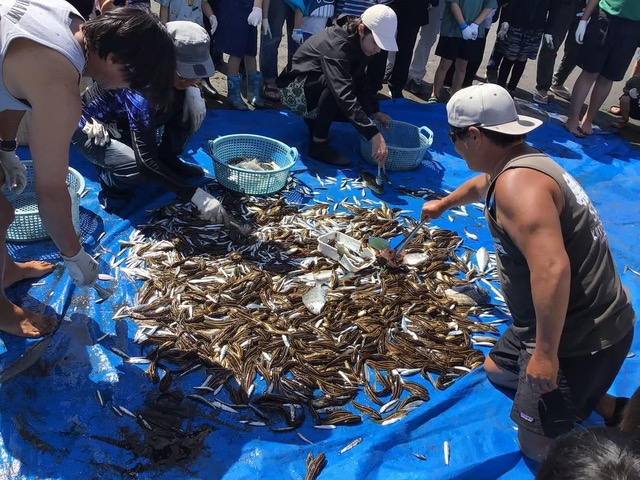
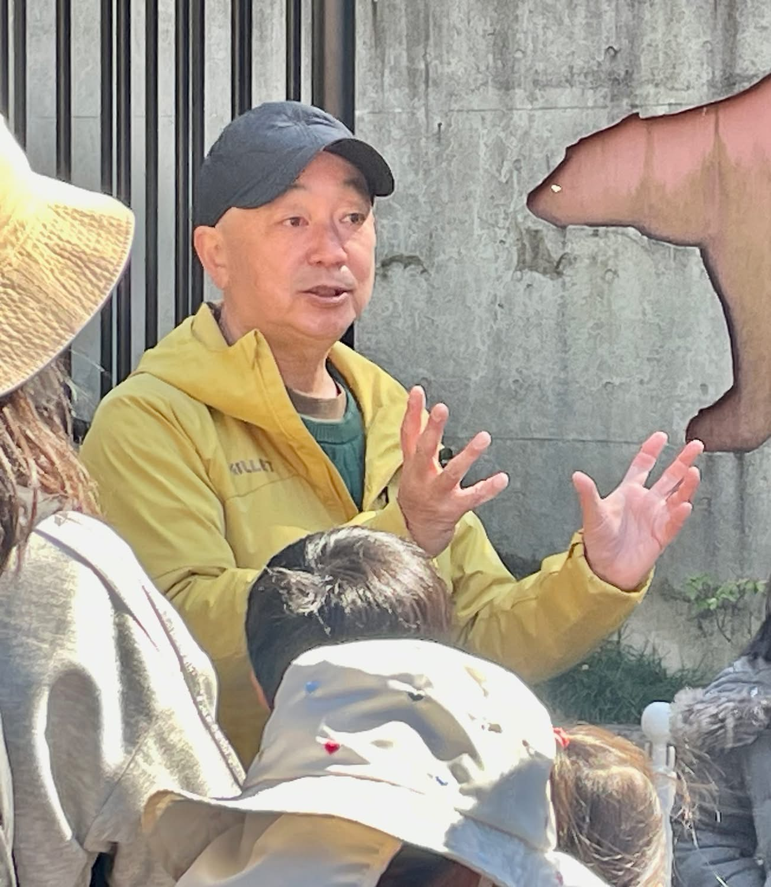
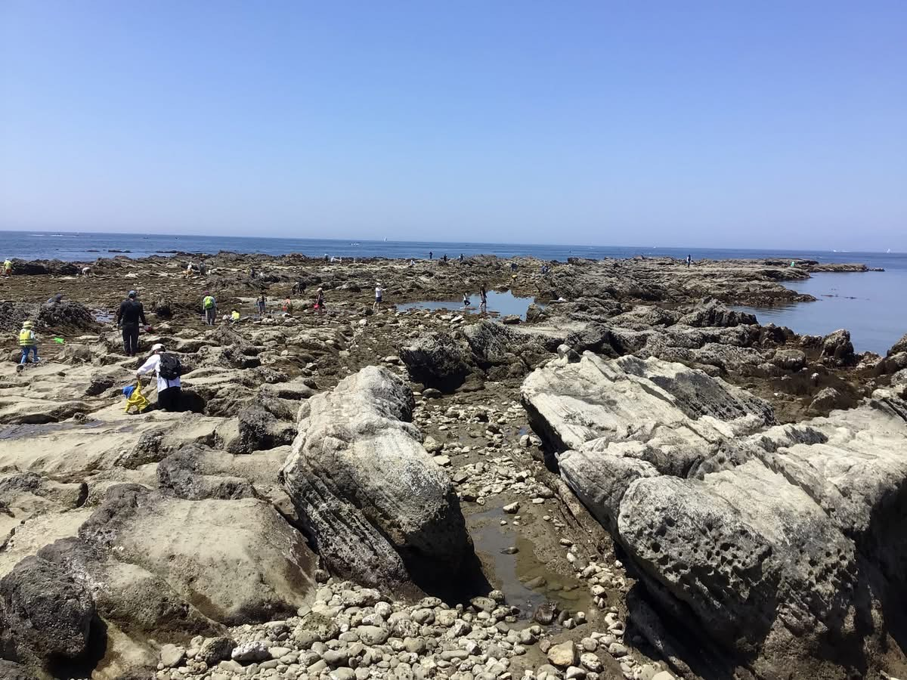
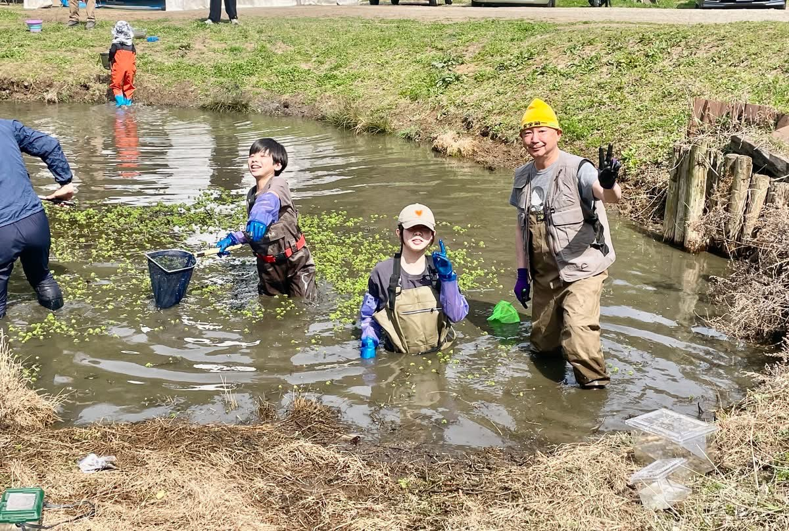
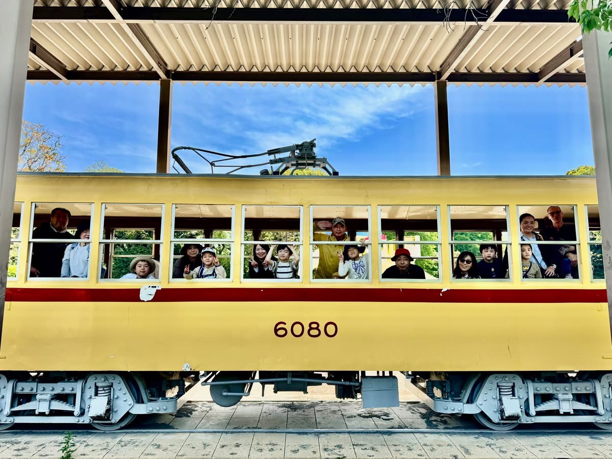
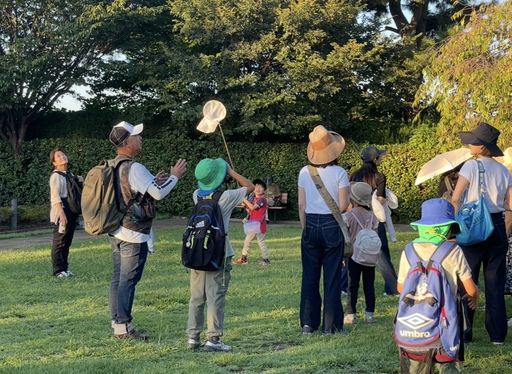
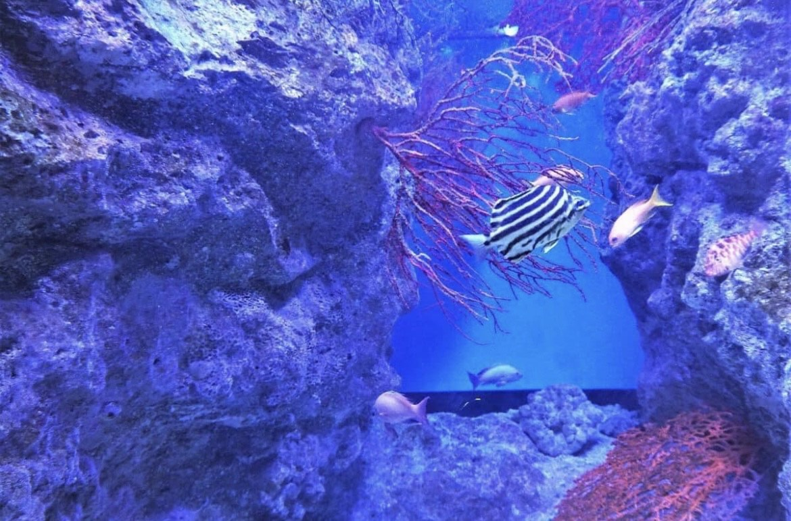

PAST EVENTS

募集終了2026年5月
地引き網で海の生き物探検！
地引き網でとれた江の島の海の生き物を、たくさんの子どもたちに説明しました。海の危険生物の解説は、大人たちも興味津々でした。

募集終了2026年4月
動物たちの秘密に迫る！
普通に展示を見るだけではわからない、動物たちの行動や生態の秘密をささき隊長が解説しました。

募集終了2026年5月
ささき隊長と潮溜りを探検！磯の生き物調査隊
海岸の干潮時に現れる磯に入り、カニやヤドカリ、魚など様々な生き物を観察・記録しました。

募集終了2026年3月
ささき隊長と池の水を抜いて生態調査！
都心郊外の豊かな里山の自然を残す池の水を抜いて、そこに棲む生きものたちを調査しました。

募集終了2026年4月
ささき隊長と路面電車の車窓から自然観察！
ささき隊長は、生き物だけでなく、電車マニアでもあります。路面電車に乗りながら車窓の自然を観察しました。

募集終了2023年8月
生きものトラップ大作戦！
生きものが集まるトラップ（しかけ）を作って仕掛け、翌朝どんな生き物が集まったか確認しました。

募集終了2023年4月
ささき隊長と行く！伊豆の自然体験ツアー
バードウォッチングにビーチコーミング、磯遊びまで、伊豆の豊かな自然をまるごと体験しました。